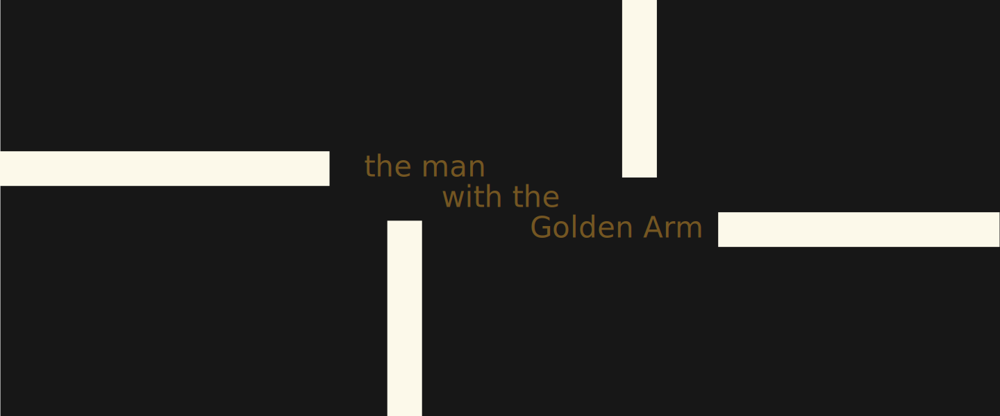
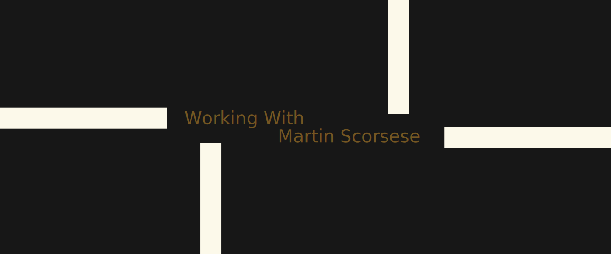

How did American Graphic Designer, Saul Bass (1920 -1996) revolutionise the film title sequence? I have looked at the way he brought his graphic design and modernist thinking to the world of the silver screen, and how he created film title sequences unlike anything that had gone before. From his beginnings as a graphic designer in New York, his subsequent move to California, and the designs he created for multiple companies.(Bigman, 2012) He got his break in the film industry through director Otto Preminger on Carmen Jones (1954) and worked with legendary directors Alfred Hitchcock and Martin Scorsese. (Radatz, 2013) Bass changed film title sequences forever, as well as being a highly influential designer across multiple design disciplines. Fellow Graphic Designer Louis Dorfsman said:
“Saul Bass practiced his craft and magic for more than fifty years. Throughout that time his designs remained provocative and challenging. They remain relevant because they continue to touch people.” (Bass, 2011)
Bass’s influence on other areas of design started with his education at the Art Students League, Brooklyn College, New York. (Bigman, 2012) He took night classes with lecturer György Kepes, who worked with László Moholy-Nagy and was involved with the New Bauhaus. After college Bass went to work in advertising, firstly in New York. In 1946 Buchanan & Co transferred him to their Los Angeles office. In 1952 he set up his own design company, Saul Bass Associates. Bass was known as a versatile designer working on advertising, posters, packaging, print, corporate branding and environmental design. The most famous being his logo designs with major corporations such as: Bell, AT&T and Warner Communications.
The popularity of his clean style is shown by how in-demand he was. (Hardiman, 2022) His timeless logo designs had an average lifespan of thirty-four years. One of his major works is a complete visual branding project for United Airlines, which he began in 1974. His iconic “Tulip” logo was used with minimal alterations until 2004 when United Airlines merged with Continental Airlines.
Bass’s timeless, effective designs were also evident in his film title work. This began with Carmen Jones (1954) and lasted until Casino (1995). Speaking about designing film titles, Bass commented:
“A graphic and industrial designer heretofore, I now found myself confronted with a flickering, moving elusive series of images that somehow had to add up to communication.” (Remington, 2003)
Bass’s first film title commission was totally unexpected, he received a commission to produce the promotional material for the Otto Preminger film Carmen Jones (1954). Bass describes the conversation that led to him making the title sequence:
“At one point, Otto and I just looked at each other and said `why not make it move? ` It really was as simple as that.” (Remington, 2003)
Bass’s next title sequence really showed how different his title sequences were going to be. (Radatz, 2013) It was his first all-graphic piece, for director Billy Wilder’s The Seven Year Itch (1955). Partnering with Harold Adler, who provided the typography, the film’s commercial and critical success made Bass the designer for this new style of title sequence. Before Bass, title sequences were simply there by contractual requirement, created by in-house art departments and were often played before the curtains in the cinema were drawn back. But Bass’s new style of title sequence was to start a change, with title sequences increasingly becoming a key part of the film itself.

One of the major reasons for this change was how Bass’s designs tied in with the theme of the film. (Art of the Title, 2022) The prime example of this is the iconic sequence for The Man with the Golden Arm (1955), one of four film title sequences Bass completed that year. For this sequence Bass again worked with director and producer Otto Preminger. Bass created an abstract sequence where white lines appear and disappear against a black background. With each frame the number and orientation of the lines change with the names of the actors and other major contributors to the film. Finally in the final frame of the sequence, the lines come together to form a disjointed arm, the symbol of the film. Using abstraction allowed Bass to imply the content of the film, which was controversial for the time with themes of drug use and addiction. Bass himself said of the sequence:
“The intent of this opening was to create a mood spare, gaunt, with a driving intensity… [that conveyed] the distortion and jaggedness, the disconnectedness and disjointedness of the addict’s life, the subject of the film.” (Art of the Title, 2022)
For me, Bass was successful in his aim, by using his own modernist style and principles he created a title sequence that was simple and effective. The sequence does not avoid the controversial content of the film, rather uses abstraction to convey the theme. Preminger rightly saw it as such a key component of the film, that when the film was distributed to cinemas, he included a note to ensure Bass’s sequence was shown with the curtains open. (Art of the Title, 2022) Something not guaranteed at the time.
Bass continued to be commissioned by Otto Preminger, creating eleven title sequences in total for him. (Bass, 2011) An increasing array of other directors, including Stanley Kramer, Stanley Kubrick and Robert Aldrich, also commissioned title sequences from Bass. They all wanted a title sequence which gave an audience a thematic glimpse at the film to follow and Bass was the designer they sought to achieve this.
Bass was also commissioned by Alfred Hitchcock, to create title sequences for Vertigo (1958) and North by Northwest (1959). For Psycho (1960) Hitchcock also made Bass a pictorial consultant, mainly to help create what is now recognised as one of the most iconic scenes in cinema history, the murder in the shower. Each of these title sequences is very different. (Radatz, 2012) Vertigo (1958) has an eerie, disconcerting feeling matched by the score by Bernard Herrmann, who also worked on all three films. North by Northwest (1959) a sophisticated thriller, uses graphics and moving type to create a feeling of fast-paced New York life. For Psycho (1960) Bass creates a minimalist title sequence using animated lines to usher in the text and push it back out again. But these lines are sometimes horizontal, sometimes vertical and their direction is often reversed, however they never meet or cross. This along with the splitting and distortion of the text at key points, leads to an uneasy mix of order and disorder. A parallel to the unstable mental state of the lead character Norman Bates. The sequence finishes with the lines mimicking the skyline of Phoenix where the first scene of the film takes place. This is a notable Bass ability, to have his title sequence merge seamlessly into the first scene of the film. (Bass, 2011) Both North by Northwest (1959) and Psycho (1960) show how effective it can be and how it makes the title sequence an even more integral part of the film.
Bass continued to design title sequences for multiple directors right up until 1966. After which he only completed two sequences in the 1970s and four in the 1980s. This coincided with Bass working on his own film projects, including winning an Oscar for his short film Why Man Creates (1968) as well as two further Oscar nominations for Notes on the Popular Arts (1978) and The Solar Film (1980) (IMDb, 2022).

However, Bass was not finished creating iconic title sequences, as director Martin Scorsese commissioned him to create the title sequence for Goodfellas (1990). (Bass, 2011) This was the first of four sequences Bass created for Scorsese, the others being Cape Fear (1991), The Age of Innocence (1993) and Casino (1995). The title sequence for Cape Fear (1991) brings together some of Bass’s signature styles and weaves them together to create a feeling of unease and tension. (Radatz, 2012) The use of offset text reminiscent of Psycho (1960) and the extreme close-up shots of the eyes, mouth, nose and hands, like Vertigo (1958). Set against a backdrop of rippling water, these close-ups bring with them an unsettling feeling of seeing these human features at such an enlarged scale. Near the end of the sequence, Bass introduces a blood red colour, starting at the top of the frame and cascading down, this adds to the feeling of unease, tension and doom, something the film itself contains throughout. (Ebert, 1991) The title sequence ends with another extreme close-up of a teenage girl’s eyes as she begins a monologue, successfully linking the title sequence to the film seamlessly.
 Bass died in 1996 but his revolutionary designs live on, through his corporate logos, still used today by Warner Communications and Hannah-Barbera. Along with his title sequences to iconic films. Bass changed how title sequences were seen by producers and directors, as integral parts of the film, rather than just an obligation that could be played before the curtains were drawn back at the cinema. Director Martin Scorsese describes Bass’s title sequences:
Bass died in 1996 but his revolutionary designs live on, through his corporate logos, still used today by Warner Communications and Hannah-Barbera. Along with his title sequences to iconic films. Bass changed how title sequences were seen by producers and directors, as integral parts of the film, rather than just an obligation that could be played before the curtains were drawn back at the cinema. Director Martin Scorsese describes Bass’s title sequences:
“They made the picture instantly special. And they didn’t stand apart from the movie, they drew you into it, instantly.” (Bass, 2011)
He used his title sequences, usually only around two minutes in length, to bring audiences a feeling of anticipation. Bass always paid attention to the overall theme of each film and brought this to the title sequence, never blatantly but through abstraction and inference, skills he had honed in his design work outside film. Saul Bass revolutionised Film Title sequences in numerous ways but the most important was that he made them part of the film.
Bibliography
Anon., 2011. Saul Bass Logo Design: Then and Now. [Online]
Available at: http://annyas.com/saul-bass-logo-design-then-now/
[Accessed 16 November 2022].
Art of the Title, 2022. The Man with The Golden Arm -- Art of the Title. [Online]
Available at: https://www.artofthetitle.com/title/the-man-with-the-golden-arm/
[Accessed 16 November 2022].
Bass, J., 2011. Saul Bass A Life in Film & Design. 1st ed. London: Laurence King Publishing Limited.
Bigman, A., 2012. Saul Bass -- The Man who Changed Graphic Design. [Online]
Available at: https://99designs.co.uk/blog/famous-design/saul-bass-graphic-designer-of-a-century/
[Accessed 16 November 2022].
Ebert, R., 1991. Cape Fear Movie Review and Film Summary (1991). [Online]
Available at: https://www.rogerebert.com/reviews/cape-fear-1991
[Accessed 29 November 2022].
Hardiman, J., 2022. The History of United Airlines' Livery. [Online]
Available at: https://simpleflying.com/united-airlines-livery-history/
[Accessed 16 November 2022].
IMDb, 2022. Saul Bass - Awards - IMDb. [Online]
Available at: https://www.imdb.com/name/nm0000866/awards?ref_=nm_awd
[Accessed 29 November 2022].
Radatz, B., 2012. Cape Fear (1991) -- Art of the Title. [Online]
Available at: https://www.artofthetitle.com/title/cape-fear/
[Accessed 29 November 2022].
Radatz, B., 2012. North By Northwest (1959) - Art of the Title. [Online]
Available at: https://www.artofthetitle.com/title/north-by-northwest/
[Accessed 24 November 2022].
Radatz, B., 2013. The Seven Year Itch (1955) Art of The Title. [Online]
Available at: https://www.artofthetitle.com/title/the-seven-year-itch/
[Accessed 25 November 2022].
Remington, R., 2003. American Modernism Graphic Design 1920-1960. 1st ed. London: Laurence King Publishing.